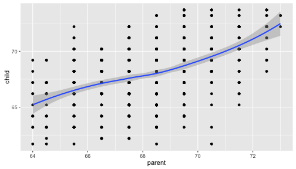
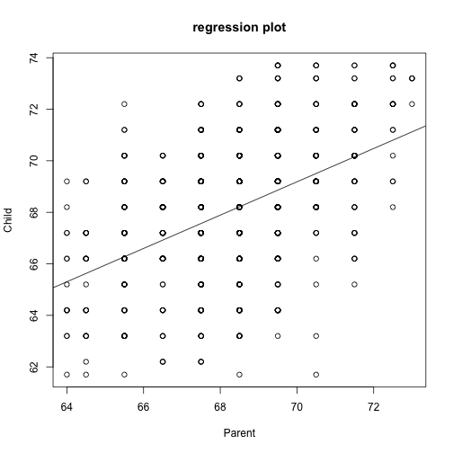
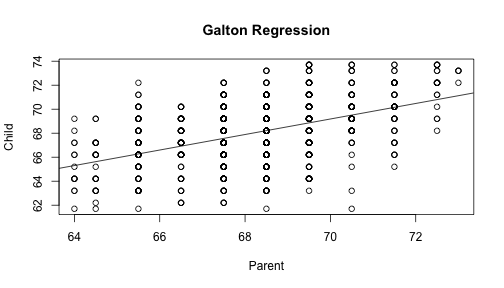

- Edit YAML front matter
- Write using R Markdown
- Use an empty line followed by three dashes to separate slides!
Developing Data Products Class Project
Predicting Child Heights Using Galton Data
Michael Green
Predict Child Height Using the Galton Dataset
Plot

Plot 2

Test Slide 2
This is test slide 2
Using Regression on Galton to get Prediction
lm(Galton$child ~ Galton$parent)
##
## Call:
## lm(formula = Galton$child ~ Galton$parent)
##
## Coefficients:
## (Intercept) Galton$parent
## 23.9415 0.6463

plot 4
Lets create a simple plot
require(ggplot2)
qplot(parent, child, data = Galton)